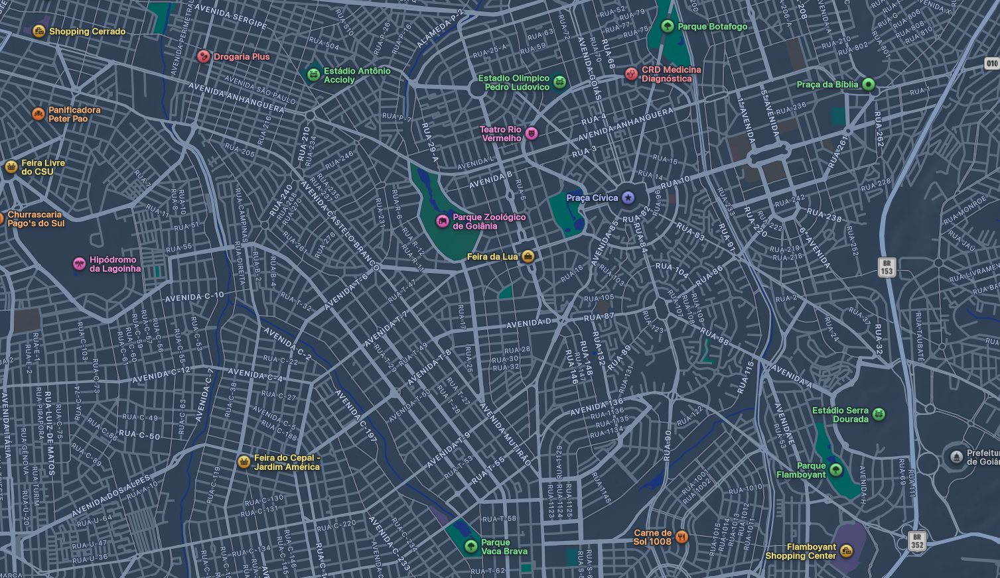

<div class="resultados-content">
    <!-- cabeçalho do Feed -->
    <div class="resultados-header">
        <div class="header-title">
            <h2>Perto de você <span class="badge-count">11</span></h2>
            <p class="header-subtitle">A partir do centro de Goiânia • Pontos aproximados do catálogo</p>
        </div>
        
        <!-- Toggle Lista/Mapa -->
        <div class="view-toggle">
            <span class="sort-text"><i class="fa fa-location-arrow"></i> Mais próximos <i class="fa fa-chevron-down"></i></span>
            <div class="toggle-buttons">
                <button class="toggle-btn active"><i class="fa fa-list"></i> Lista</button>
                <button class="toggle-btn"><i class="fa fa-map"></i> Mapa</button>
            </div>
        </div>
    </div>

    <!-- Grade de Cards (Feed) -->
    <div class="cards-grid" id="feed-resultados">
        
        <!-- Exemplo de Card 1 (vamos usar este molde no JS para injetar os dados) -->
        <div class="venue-card">
            <div class="card-image-container">
                <!-- Imagem Fictícia de Fundo -->
                
                
                <!-- Tags Flutuantes -->
                <span class="tag-time"><i class="fa fa-circle" style="color: #00b4d8; font-size: 8px; margin-right: 4px;"></i> Até 01:00</span>
                <button class="btn-fav"><i class="fa fa-heart"></i></button>
                <span class="tag-beneficio">BENEFÍCIO VENUO</span>
            </div>
            
            <div class="card-info">
                <div class="card-meta">
                    <span class="categoria">Bares</span>
                    <span class="rating"><i class="fa fa-star" style="color: #ffb703;"></i> 4.1</span>
                </div>
                
                <h3 class="venue-name">Yolo Beer Garden <i class="fa fa-arrow-up-right-from-square icon-link"></i></h3>
                
                <div class="card-footer">
                    <span class="distance"><i class="fa fa-map-marker-alt"></i> Setor Sul • 599 m</span>
                    <span class="price">$$$</span>
                </div>
            </div>
        </div>    
        
        <!-- depois vou adicionar mais cards fictícios aqui para testar o visual da grade -->
    </div>

    <!-- NOVO: Visão de Mapa (Oculta por padrão) -->
    <div id="mapa-view" style="display: none;">
        <div class="mapa-simulado-container">
            <!-- Imagem de um mapa estático para simulação -->
            
            
            <!-- Exemplo de Pin/Marcador no mapa -->
            <div class="mapa-pin" style="top: 40%; left: 50%;">
                <i class="fa fa-map-marker-alt"></i>
                <div class="pin-card">
                    <strong>Yolo Beer Garden</strong>
                    <span>$$$ • Bares</span>
                </div>
            </div>
            
            <div class="mapa-pin" style="top: 60%; left: 30%;">
                <i class="fa fa-map-marker-alt"></i>
                <div class="pin-card">
                    <strong>Gercina Bar</strong>
                    <span>$$ • Bares</span>
                </div>
            </div>
        </div>
    </div>

</div>